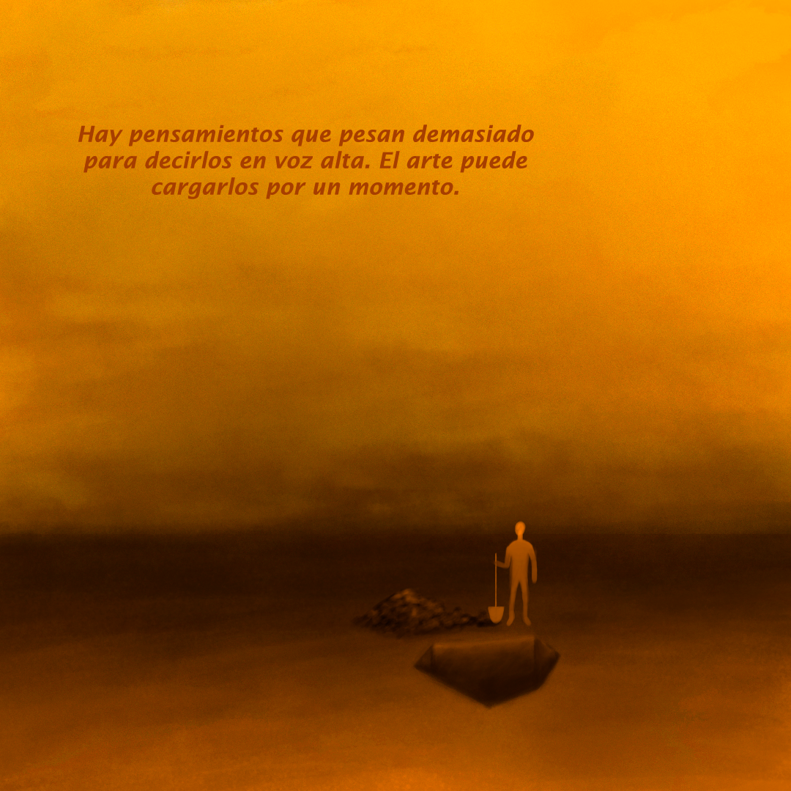
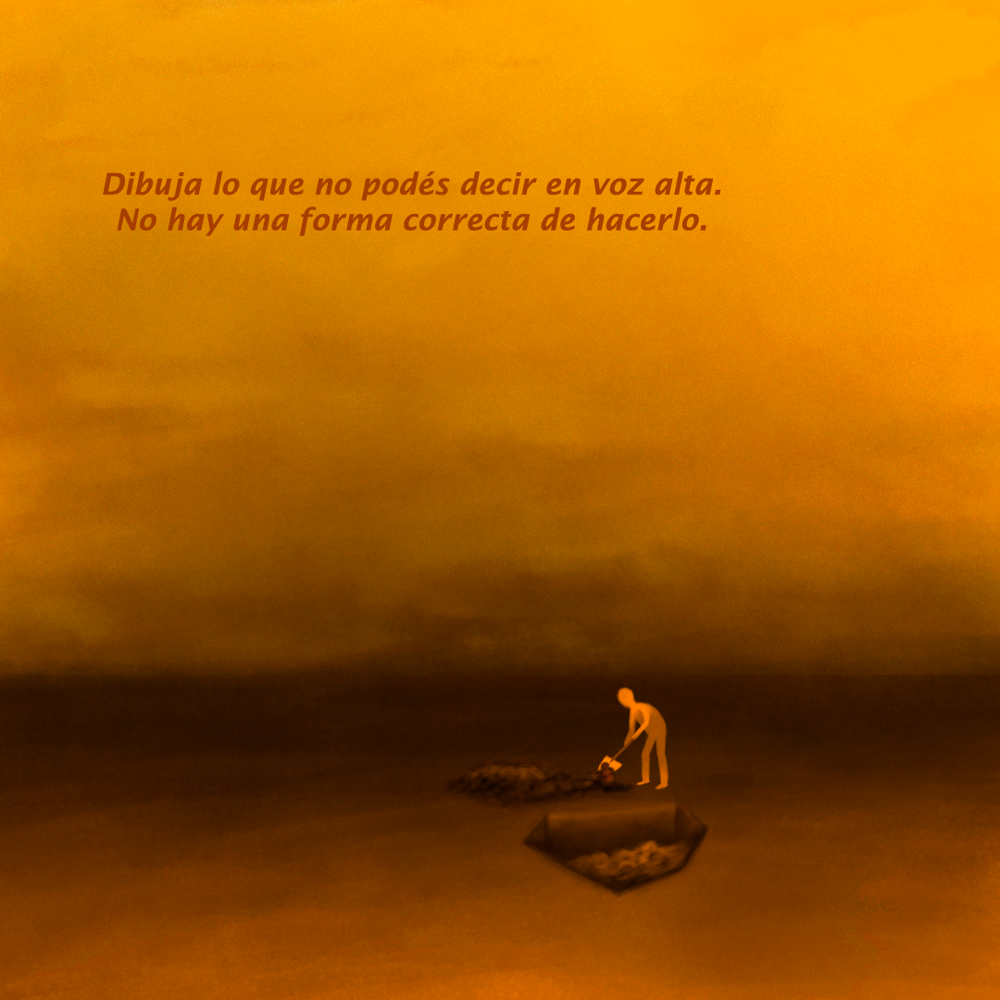
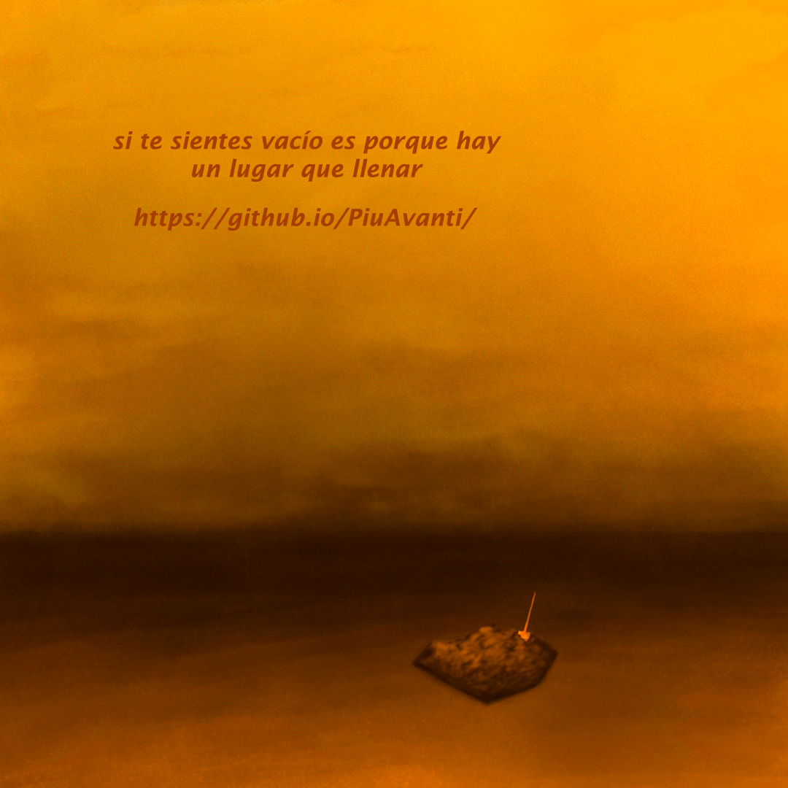

A veces no encontramos las palabras para decir lo que sentimos. Crear también puede ser una forma de hacerlo.
Un espacio para compartir aquello que quizá no pudiste decir de otra manera.

Una forma de expresar lo que las palabras no alcanzan.

Lo que no siempre puede decirse con palabras.

Crear también puede ser una manera de continuar.
No necesitas saber dibujar. No necesitas hacerlo perfecto. Solo necesitas encontrar una forma de sacar aquello que llevas dentro.
Selecciona una imagen para visualizar cómo funcionaría este espacio.
PiuAvanti propone el arte como un medio de expresión, no como reemplazo de ayuda psicológica o profesional.